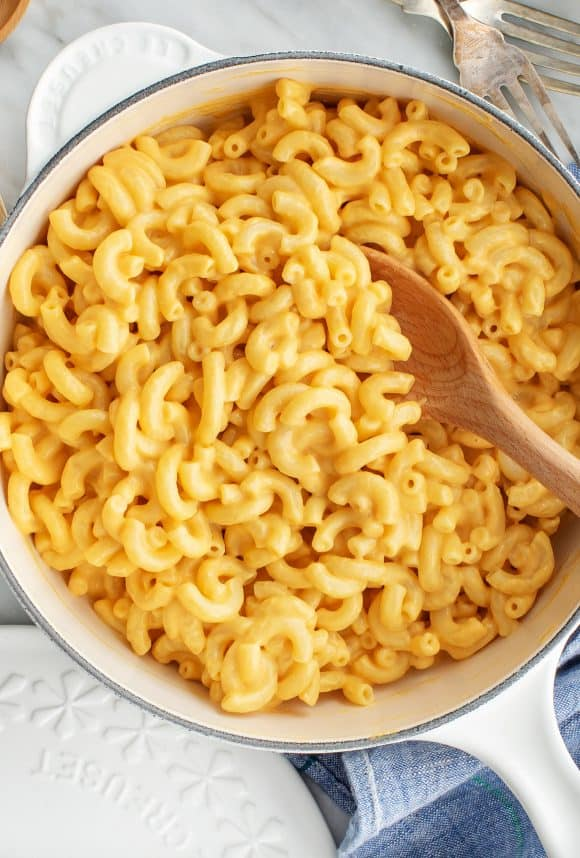

Mac and Cheese Recipe

Vegan Mac and Cheese
Vegan mac and cheese is a quick and easy dinner that can be whipped up as quickly as it takes to boil the water and cooking the pasta
This recipe is not only quick but very healthy compared to regular mac and cheese with many of the ingredients packing a nutrional punch
Ingredients
- 1.5 cups of cashews (Soaked over night or in boiling water for at least 10 minutes)
- 3 cloves of gralic or 1 tsp garlic powder
- 1 tsp onion powder
- 1/2 cup nutrional yeast
- 1 cup soy milk
- 3 tbs oil
- Juice of half a lemon
- 1 tsp turmeric
- 500g macaroni pasta
- Salt and pepper to taste
Intructions
- Begin bioling water and add pasta to bioling water until cooked
- Drain soaked cashews and add to a high speed blender or food proessor
- Add the rest of the ingredients and blend on high until a smooth mixure. Add water or milk to get the desrieed consistency
- Drain pasta and keep 1/2 of the pasta water
- Combine pasta, pasta water and sauce. Season to taste with salt and pepper
- Serve with desired addition, e.g. protien like tofu or mock meat.
- (optional) Sprinkle smoked paprika or a herb